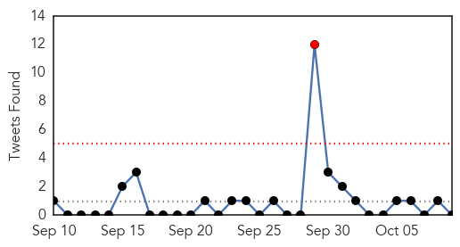
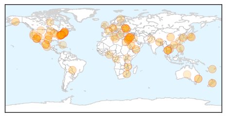
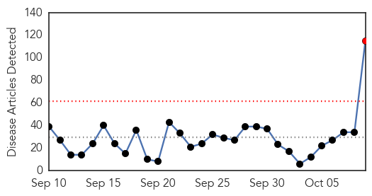
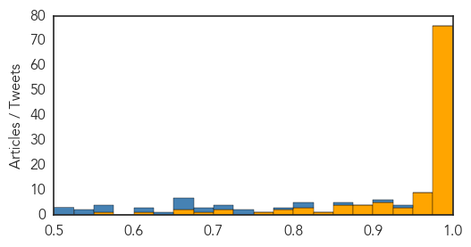

Unknown
30-Day Web Trend
0 alerts, 0 warnings

30-Day Twitter Trend
1 alerts, 0 warnings

Article Locations
Article Confidences

Top Articles:
- 0.990
- Hundreds get flu shots at Waynesboro drive-thru
- 0.982
- Thailand: Second MERS case suspected
- 0.968
- EV-D68: Will Last Year's Outbreak Be Repeated?
- 0.966
- Second suspected MERS case in Thailand
- 0.965
- RI Health Department launches flu vaccine campaign
- 0.964
- Second Mers case in Thailand in two days suspected
- 0.946
- Delaware health officials offer free flu shots [video] — NewsWorks
- 0.929
- Viral fever outbreak grips Mugu village
- 0.927
- Norovirus in Washoe County: know the signs, observe the protocol
- 0.924
- Del. begins 2015-16 flu shot campaign
- 0.918
- Report Elk Hoof Disease to Oregon Department of Fish and Wildlife Website
- 0.917
- Chicago Tribune
- 0.917
- Chicago Tribune
- 0.917
- Chicago Tribune
- 0.917
- Chicago Tribune
- 0.917
- Chicago Tribune
- 0.917
- Chicago Tribune
- 0.917
- Chicago Tribune
- 0.917
- Chicago Tribune
- 0.917
- Chicago Tribune
- 0.917
- Chicago Tribune
- 0.917
- Chicago Tribune
- 0.917
- Chicago Tribune
- 0.917
- Chicago Tribune
- 0.917
- Chicago Tribune
- 0.917
- Chicago Tribune
- 0.917
- Chicago Tribune
- 0.917
- Chicago Tribune
- 0.917
- Chicago Tribune
- 0.917
- Chicago Tribune
- 0.892
- Bird Flu Expected to Wane in U.S. as Weather Warms
- 0.889
- Health on alert for waterborne diseases
- 0.882
- 9 cases of suspected HFMD in Isabela
- 0.872
- Teen who lost leg to flesh-eating bacteria will undergo 10th surgery
- 0.859
- Salmonella major killer of young children in Africa
- 0.850
- Doctors say Egyptian government ignoring virus outbreak
- 0.850
- Chula Vista student with flesh-eating bacteria undergoes 10th su
- 0.831
- UNICEF and WHO ready to support immediate polio vaccination campaign in Ukraine
- 0.826
- Norovirus hits historic New York hotel
- 0.820
- Another death linked to cucumber salmonella outbreak
- 0.816
- State awaiting results of tests from Oxford fairgrounds as it investigates 2 E. coli cases
- 0.815
- Another death related to cucumber salmonella outbreak
- 0.799
- Report on Alzheimer’s spread misinterpreted
- 0.789
- Two toddlers infected by same strain of E. coli, Maine CDC reports
- 0.780
- We must reduce infant mortality rates
- 0.774
- Mexico captures the pilot that allegedly helped Joaquin “El Chapo ” Guzman escape
- 0.744
- Bluetongue disease hits deer in Eureka area
- 0.727
- US to overhaul troubled Syria rebel training programme
- 0.727
- UN proposes plan for unity govt to Libya's rival factions
- 0.727
- World hails Tunisia's 'inspiring' Nobel Peace laureates
Showing top 50 articles...
Top Tweets:
-
No tweets found for Oct 09, 2015
Ebola
30-Day Web Trend
1 alerts, 0 warnings

30-Day Twitter Trend
1 alerts, 0 warnings

Article Locations

Article Confidences
Top Articles:
- 1.000
- Pauline Cafferkey, Scots Ebola nurse in ‘serious condition’
- 1.000
- 1st-diagnosed-with-Ebola-in-UK-readmitted - Story
- 1.000
- Ebola scare in Nigeria false alarm: WHO
- 1.000
- 1st-diagnosed-with-Ebola-in-UK-readmitted - Story
- 1.000
- How is Ebola treated and why can it sometimes linger in the body after recovery? Questions about the deadly outbreak answered
- 1.000
- How is Ebola treated and why can it sometimes linger in the body after recovery? Questions about the deadly outbreak answered
- 1.000
- Ebola's persistence causes concern - World News
- 1.000
- Is Ebola Back In Nigeria? 1 Dead, 10 Quarantined In Southeast City Amid Disease Scare
- 1.000
- 10 people quarantined as man dies in Calabar hospital
- 1.000
- Pauline Cafferkey contracts Ebola again and returns to London hospital isolation unit
- 1.000
- Ebola's persistence in survivors fuels concerns over future risks
- 1.000
- How is Ebola treated and why can it sometimes linger in the body after recovery? Questions about the deadly outbreak answered
- 1.000
- WHO: Ebola scare in Nigeria false alarm
- 1.000
- UK’s first Ebola patient back in hospital in serious condition after complication
- 1.000
- Africa - News and Analysis
- 1.000
- Air France Quarantine 183 After 4 Cases in Madrid, Moscow Monitors 2 Students
- 0.999
- No fresh Ebola in Nigeria as test proves negative in Calabar
- 0.999
- Johnson & Johnson Announces Start Of Clinical Trial Of Ebola Vaccine Regimen In Sierra Leone
- 0.999
- British nurse who contracted Ebola hospitalized for late complication
- 0.999
- Nigerian city in new Ebola scare
- 0.999
- Pauline Cafferkey has Ebola virus reoccurence after meeting UK PM’s wife
- 0.999
- UK nurse has Ebola relapse as J&J vaccine trial starts
- 0.999
- Ebola nurse Pauline Cafferkey 'in serious condition'
- 0.999
- Ebola Scare: Nigeria Remains Ebola-free- FG
- 0.999
- Africa - News and Analysis
- 0.998
- British nurse’s re-hospitalization, reports of blindness and other ‘post-Ebola syndrome’ complications haunt survivors
- 0.998
- GOOD NEWS: Calabar case ‘not Ebola’
- 0.998
- Sierra Leone holds her breath as British Ebola free nurse goes back into hospital
- 0.998
- Ten Quarantined Over Possible Infection
- 0.998
- Ebola nurse Pauline Cafferkey transferred to London hospital isolation unit following new scare
- 0.998
- Clinical Trial of Ebola Vaccine Regimen in Sierra Leone
- 0.998
- UPDATE 2-J&J starts vaccine trial in Sierra Leone, even as Ebola fades
- 0.998
- Scottish Ebola nurse back in isolation
- 0.997
- Ebola nurse Pauline Cafferkey treated for 'unusual late complication' of the infection
- 0.997
- Ebola nurse Pauline Cafferkey 'flown to London Royal Free hospital'
- 0.997
- Nurse Pauline Cafferkey returns to Royal Free after Ebola ‘complication’
- 0.997
- J&J starts vaccine trial in Sierra Leone, even as Ebola fades
- 0.997
- J&J starts vaccine trial in Sierra Leone, even as Ebola fades
- 0.996
- Ebola nurse Pauline in hospital with ‘complication’
- 0.996
- Ebola Might Be In Nigeria annually After it had been Declared Free from herpes Time
- 0.996
- Nigerian News from Leadership News
- 0.995
- Scottish Ebola nurse back in isolation
- 0.995
- Ebola-infected British nurse Pauline Cafferkey in "serious condition" after being flown to London isolation unit
- 0.995
- Ebola nurse Pauline Cafferkey in 'serious condition'
- 0.994
- Calabar hospital quarantines 15 patients •Doctor, nurses under watch •FG sends team to UCTH
- 0.993
- British nurse who contracted Ebola hospitalized again
- 0.993
- Mossneuk Primary School parents express worry over ebola nurse's visit
- 0.993
- Ebola Virus Still Present in UK Nurse Pauline Cafferkey
- 0.992
- Johnson & Johnson Starts Clinical Trial Of Ebola Vaccine In Sierra Leone
- 0.992
- UK’s first Ebola patient back in hospital with ‘unusual late complication’
Showing top 50 articles...
Top Tweets:
- 0.948
- WHO Says No New Cases Of Ebola In West Africa Last Week: Is The Epidemic Over? - Tech Times http://t.co/DocE748Cy4 ebola EVD
- 0.919
- Dr Chan: This Ebola outbreak was different complex in size & context in 3 countries which were unfamiliar with the disease & ill-prepared
- 0.858
- Nigerian at centre of Ebola scare did not have the virus - WHO - Yahoo News UK http://t.co/RuKdsTH0GD ebola EVD
- 0.818
- J&J starts clinical trial of Ebola vaccine in Sierra Leone - Reuters UK http://t.co/mPxVREp0fY ebola EVD
- 0.818
- Dr Chan: The outbreak in West Africa has been different. Ebola is well-equipped to take advantage of any weaknesses in preparedness
- 0.786
- Johnson & Johnson starts Ebola vaccine trial in Sierra Leone - Your News Now http://t.co/Esgo0G7pFd ebola EVD
- 0.749
- Age-specific incidence of Ebola virus disease @thelancet http://t.co/AEkNVRPxLn
- 0.742
- Johnson & Johnson launches Ebola vaccine trial in Sierra Leone - Toronto Star http://t.co/46Yo60Kv47 ebola EVD
- 0.717
- Dr Chan: Clinicians had no vaccine no treatment and no personal equipment specifically designed to protect them from Ebola
- 0.713
- Antiviral compound provides full protection from Ebola virus in nonhuman ... - EurekAlert (press release) http://t.co/iuti3sX52Y ebola EVD
- 0.695
- Scottish nurse is suffering from a post-Ebola complication. She's not alone; thousands of survivors face similar issues in West Africa.
- 0.680
- Dr Chan: The Ebola outbreak in West Africa was a dramatic and tragic revelation of weaknesses and gaps http://t.co/dcKUdg5YrJ
- 0.670
- UK's first Ebola patient back in hospital in serious condition after complication - CNN International http://t.co/MwOw0dkr13 ebola EVD
- 0.663
- Scottish Ebola nurse treated for infection - The Guardian http://t.co/6UGSMenekZ ebola EVD
- 0.661
- nurse who contracted Ebola hospitalized - The Denver Post http://t.co/l9QiA8s4nc ebola EVD
- 0.659
- RT: Many Ebola survivors in Sierra Leone have been suffering unnoticed. They've lost their sight their body tissues... http:/…
- 0.651
- Scottish Ebola nurse is back in hospital in 'serious condition' - MarketWatch http://t.co/6SYv6zwj6y ebola EVD
- 0.636
- Sample is Ebola NEGATIVE and Lassa NEGATIVE. Calabar RoadToZero Official Update from the Nigerian Center for Disease Control
- 0.611
- Ebola Could Be Back in Nigeria - TIME http://t.co/T65PJXvo5t ebola EVD
- 0.607
- Ebola Outbreak Winds Down Effects Still Felt By Survivors - KERO 23ABC News http://t.co/0rBEBp9hia ebola EVD
- 0.572
- Experienced Ebola doctor & researcher Janet Scott on post-Ebola syndrome. Tune in to BBC WS in 20 minutes! https://t.co/Zbrk36r3R5
- 0.552
- Johnson & Johnson Announces Start of Clinical Trial of Ebola Vaccine Regimen ... - MarketWatch http://t.co/rSVZj19ASc ebola EVD
- 0.551
- Scottish Ebola nurse flown to specialist hospital in London - The Guardian http://t.co/zCrKTVDDwe ebola EVD
- 0.547
- Ebola scare in Nigeria false alarm: WHO - BBC News http://t.co/ffWYPLTzsn ebola EVD
- 0.546
- Pauline Cafferkey arrives for Ebola 'complication' treatment - Daily Mail http://t.co/3aqwLefDQX ebola EVD
- 0.523
- RT: You boring blank empty colourless beautiful Ebola virus weekly case map http://t.co/cnoEHjCPDf
- 0.522
- Ebola expert says it is unusual for virus to return – video - The Guardian http://t.co/ybpNtY5dO6 ebola EVD
- 0.517
- Live webcast→ Review Committee on the Role of the International Health Regulations in the Ebola outbreak & Response http://t.co/1NjaxqCNH5